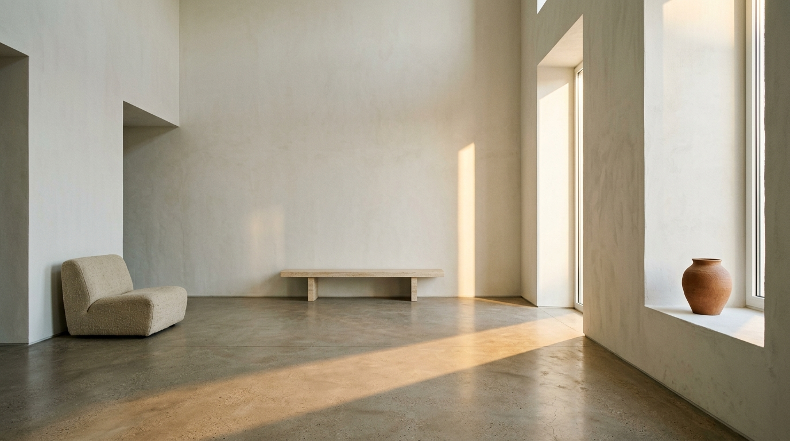
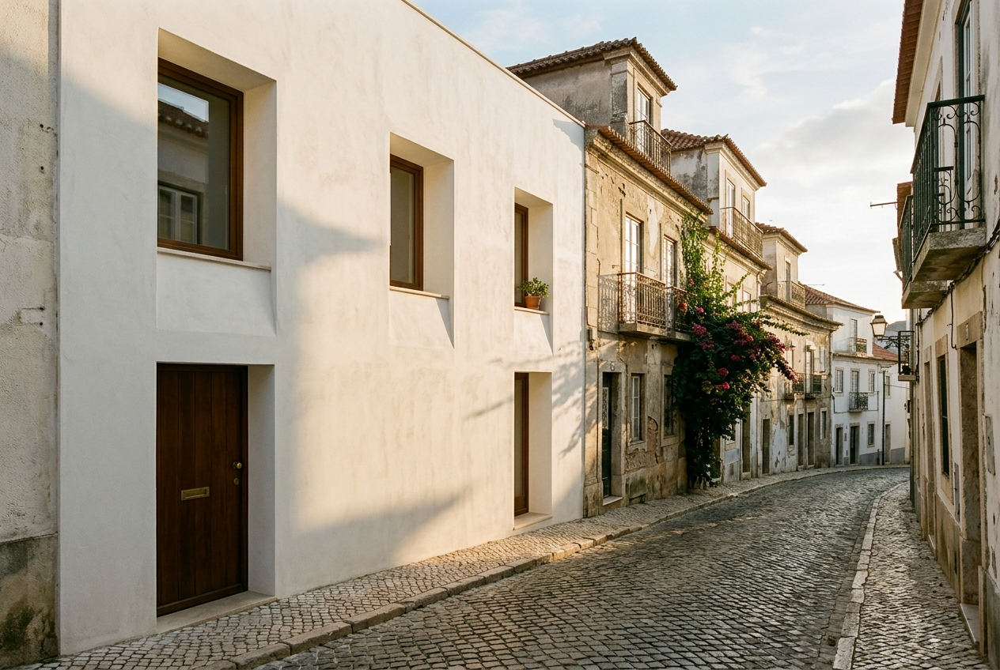
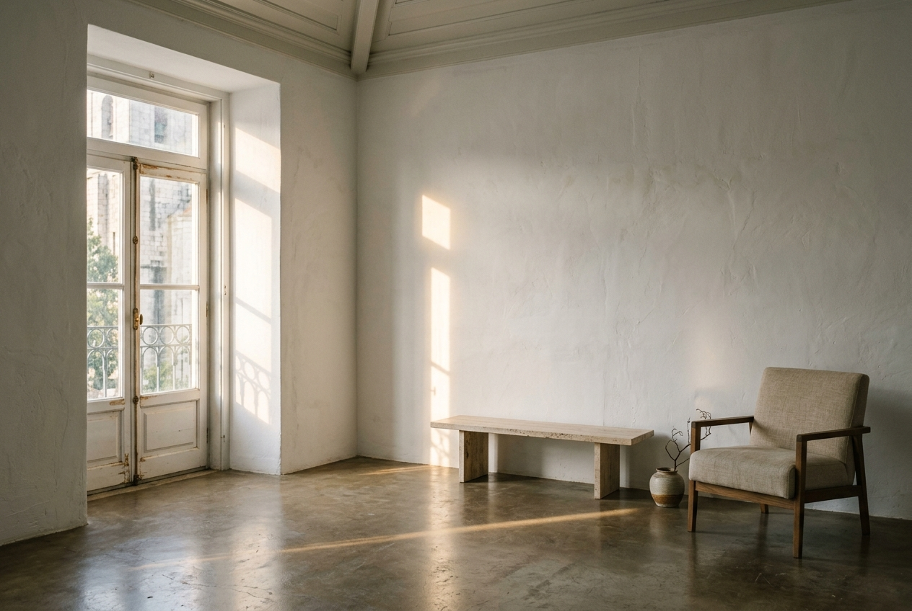

Casa Mouraria
A minimalist private home shaped by white plaster, concrete flooring, large windows, and warm afternoon light.

View across the ground-floor salon towards the west embrasures.
Light as the
primary material.
Situated within the compact, winding topography of Lisbon's historic Mouraria quarter, the house negotiates a dialogue between urban density and profound domestic stillness. The original masonry envelope was retained and consolidated with breathable hydraulic lime, preserving the irregular geometry of the street facade while reordering the internal volume into a singular light-harvesting organism.
Floor planes are cast in continuous polished concrete, providing a quiet thermal sink against summer heat. Deep window reveals—beveled at obtuse angles—catch low Atlantic sunlight as it strikes the hillside, bouncing diffuse illumination across the textured chalk walls without creating glare.
Throughout the residence, joinery in bleached Portuguese oak acts as subtle room partitions rather than conventional dividing walls. The interior avoids extraneous ornament, allowing shadow, temperature, and silence to define the spatial experience.

